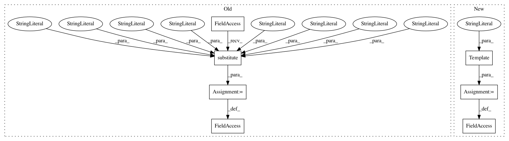

ee30332d419c8f95ec97f7870ecbb86c2dd187c3,scikits/cuda/cublas.py,,,#,1513
Before Change
cublasCheckStatus(status)
return np.float32(_a.value), np.float32(_c.value), np.float32(_s.value)
cublasSrotg.__doc__ = \
_ROTG_doc.substitute(precision="single-precision",
real="real",
type="numpy.float32",
c_type="numpy.float32",
s_type="numpy.float32",
a_val="np.float32(np.random.rand())",
b_val="np.float32(np.random.rand())",
func="cublasSrotg")
_libcublas.cublasDrotg_v2.restype = int
_libcublas.cublasDrotg_v2.argtypes = [ctypes.c_int,
ctypes.c_void_p,
After Change
// SROTG, DROTG, CROTG, ZROTG
_ROTG_doc = Template(
Construct a ${precision} ${real} Givens rotation matrix.
Constructs the ${precision} ${real} Givens rotation matrix
`G = [[c, s], [-s, c]]` such that
`dot(G, [[a], [b]] == [[r], [0]]`, where
`c**2+s**2 == 1` and `r == a**2+b**2` for real numbers and
`c**2+(conj(s)*s) == 1` and `r ==
(a/abs(a))*sqrt(abs(a)**2+abs(b)**2)` for `a != 0` and `r == b`
for `a == 0`.
Parameters
----------
handle : int
CUBLAS context.
a, b : ${type}
Entries of vector whose second entry should be zeroed
out by the rotation.
Returns
-------
r : ${type}
Defined above.
c : ${c_type}
Cosine component of rotation matrix.
s : ${s_type}
Sine component of rotation matrix.
Examples
--------
>>> import pycuda.autoinit
>>> import pycuda.gpuarray as gpuarray
>>> import numpy as np
>>> a = ${a_val}
>>> b = ${b_val}
>>> h = cublasCreate()
>>> r, c, s = ${func}(h, a, b)
>>> cublasDestroy(h)
>>> np.allclose(np.dot(np.array([[c, s], [-np.conj(s), c]]), np.array([[a], [b]])), np.array([[r], [0.0]]))
True
)
_libcublas.cublasSrotg_v2.restype = int
_libcublas.cublasSrotg_v2.argtypes = [ctypes.c_int,
ctypes.c_void_p,
In pattern: SUPERPATTERN
Frequency: 4
Non-data size: 7
Instances
Project Name: lebedov/scikit-cuda
Commit Name: ee30332d419c8f95ec97f7870ecbb86c2dd187c3
Time: 2013-07-16
Author: lev@columbia.edu
File Name: scikits/cuda/cublas.py
Class Name:
Method Name:
Project Name: lebedov/scikit-cuda
Commit Name: ee30332d419c8f95ec97f7870ecbb86c2dd187c3
Time: 2013-07-16
Author: lev@columbia.edu
File Name: scikits/cuda/cublas.py
Class Name:
Method Name:
Project Name: lebedov/scikit-cuda
Commit Name: 762078742de4aad07627f1add50b5c638a40f18b
Time: 2019-07-08
Author: lev@columbia.edu
File Name: skcuda/cublas.py
Class Name:
Method Name:
Project Name: lebedov/scikit-cuda
Commit Name: 762078742de4aad07627f1add50b5c638a40f18b
Time: 2019-07-08
Author: lev@columbia.edu
File Name: skcuda/cublas.py
Class Name:
Method Name: